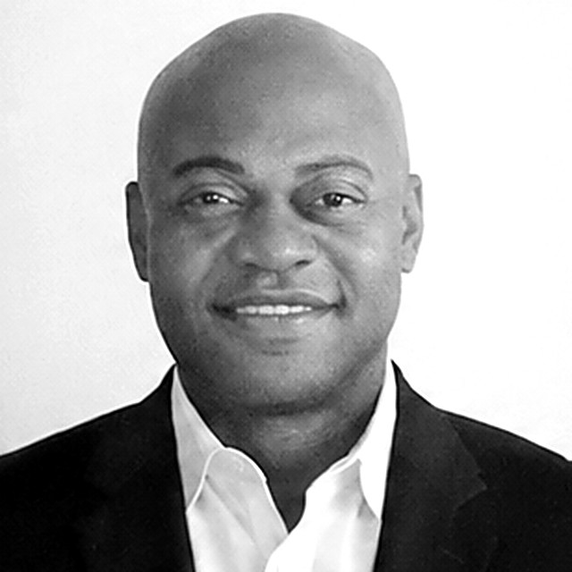

Become an FAA-Certified
Commercial Drone Pilot.
Instructor-led FAA Part 107 Ground School that prepares eligible participants for the FAA Remote Pilot knowledge exam, then connects them to career readiness, Job Placement Assistance and the KAI-Netics Pilot Network.
Where do you fit?
Training is one pathway into the broader KAI-Netics autonomous-operations ecosystem. Start with the one that matches you.
Enroll in Ground School
Six weeks of instructor-led preparation for the FAA Remote Pilot knowledge exam, with practice testing, career pathway guidance and Job Placement Assistance.
Enroll in Ground SchoolJoin the KAI-Netics Pilot Network
Be considered for commercial missions, contract opportunities, employer referrals, training support and future autonomous-systems operations.
Join the Pilot NetworkPartner With KAI-Netics
Host, sponsor or fund a cohort, or build a workforce pathway around drones and autonomous systems for your community or team.
Partner With KAI-NeticsThe KAI-Netics pilot pathway
From first exposure to FAA certification and professional opportunity. KAI-Netics prepares and connects; the FAA issues FAA credentials.
Explore
Hands-on exposure to drones through demonstrations, workshops and community programs.
FAA TRUST
The FAA's free recreational drone-safety pathway for recreational and new flyers.
TRUST completion certificateFAA Part 107 Ground School
KAI-Netics instructor-led preparation for the FAA Remote Pilot knowledge exam.
Age 16+FAA Remote Pilot Certification
Pass the FAA knowledge test and complete the FAA application.
Issued by the FAAKAI-Netics Pilot Network
Certified pilots apply to be considered for missions, referrals and support.
For certified pilotsCareer & Contract Opportunities
Inspection, construction, public safety, media, logistics, utilities and autonomous systems.
Employment is not guaranteedMore than a test-prep class
The FAA's recreational drone-safety pathway
The Recreational UAS Safety Test (TRUST) is the FAA's free online safety test for recreational flyers, taken through an FAA-approved test administrator. Passing earns a TRUST completion certificate. KAI-Netics guides recreational, younger and new drone participants through TRUST, including in group and youth settings. TRUST is a recreational requirement, not a professional certification, and doesn't authorize commercial flying.
Instructor-led, in person
KAI-Netics provides instructor-led ground school designed to prepare eligible participants for the FAA Remote Pilot knowledge exam. The FAA, not KAI-Netics, issues the Remote Pilot Certificate after you pass the knowledge test and complete its application process.
Training connected to real work
We connect drone training to career pathways in infrastructure inspection, construction, public safety, media, autonomous systems, logistics, utilities and related emerging-technology sectors, so you understand where the credential can lead and what employers look for.
Support after you certify
KAI-Netics supports qualified graduates through employer introductions, referrals, career-readiness support, pilot opportunities, contract opportunities, and workforce partnerships.
Employment is not guaranteed.
What the Ground School includes, and what it doesn't
A structured classroom course that prepares you for the FAA's Unmanned Aircraft General – Small (UAG) knowledge test.
Included
- Instructor-led FAA Part 107 Ground School: 12 in-person sessions, 24 classroom hours
- FAA exam preparation: regulations, airspace and sectional charts, weather, loading and performance, operations, emergency procedures, crew resource management, radio communication, airport operations, aeronautical decision-making, physiology and maintenance
- Practice testing, assigned coursework and 12 months of access to our practice-question library
- Career pathway guidance and Job Placement Assistance
- Eligibility to apply to the KAI-Netics Pilot Network after FAA certification
- One initial FAA knowledge-test attempt
Not included
- Practical flight instruction, flight time or aircraft use. Flight training is a separate offering, priced separately.
- Flight proficiency certification
- FAA retest fees
- Any guarantee of employment, earnings, placement or exam results
KAI-Netics is not affiliated with or endorsed by the FAA.
How the inaugural cohort is formed
Seats go to the first 12 paid enrollments. Additional enrollees join the next-cohort waiting list.
Enroll
Complete the enrollment form below with your city or ZIP code and the days and times that work. Your enrollment goes straight into your basket.
Check out
Open your basket and pay $699 by Zelle (to kai-netics) or $721 by card on Stripe's secure checkout. Your seat is held once payment is received, and payment is due 7 days before session 1. Please read our cancellation and refund policy before you pay.
Get your confirmation
We select the classroom location and schedule around enrollees' preferences and email you the details. If KAI-Netics cancels or reschedules, you may choose a full refund or a free transfer.
Location
Our classroom location will be selected around the geographic concentration of the first cohort's participants, subject to suitable venue availability. Tell us your city or ZIP code and preferred schedule so we can plan a practical meeting location.
Delivery
In-person learning comes first. Our inaugural cohort meets face to face, with instructor-approved remote access available as an emergency accommodation when feasible. Emergency remote access is a backup arrangement, not a separately available online enrollment option.
Future fully remote cohorts are under consideration. Join the remote-interest list to receive updates.
Prepare to Pass—with KAI-Netics Behind You.
Complete the course and readiness requirements. If you don't pass your first FAA exam, receive a personalized study plan and up to two additional hours of instructor-led group review at no additional tuition charge.
Eligibility requires completing all 12 sessions, including approved makeups; completing assigned coursework; scoring at least 85% on three designated practice exams; and taking your first FAA exam within 30 days of course completion. Submit your unsuccessful exam report within 14 days to request support. Additional review is provided online within 30 days of an eligible request. Retest fees are the student's responsibility. This commitment provides additional preparation, not a guaranteed exam result.
Build a drone and autonomous-systems workforce pathway with us.
For community nonprofits, youth-serving organizations, workforce-development agencies, schools, STEM partners, foundations, employers and sponsors.
Ask about:
- Sponsored cohorts
- Workforce partnerships
- Youth programming
- FAA Part 107 preparation
- FAA TRUST programming
- Customized drone/UAS training
Community and youth programs may be delivered with KAI-Netics Equity & Autonomy Foundry (EAF), our workforce and community affiliate.

Kevin Smith
Founder/CEO of KAI-Netics: Trusted Autonomous Operations & Systems Integration. Meet the founder
Program brochure
The full pathway, Ground School format, cohort selection, partner options and the Exam Confidence Commitment terms.
Start here
Choose the option that fits. Remote-interest and partner inquiries are free and carry no obligation. Already Part 107 certified? Join the KAI-Netics Pilot Network instead.
Enroll in the inaugural in-person cohort. After you submit, your enrollment is added to your basket, where you check out and pay.
Thank you for enrolling.
Frequently asked questions
Does KAI-Netics issue my FAA certificate?
No. KAI-Netics provides instructor-led ground school that prepares eligible participants for the FAA Remote Pilot knowledge exam. The FAA issues the Remote Pilot Certificate after you pass the knowledge test and complete its application process.
What is FAA TRUST, and do I need it?
TRUST (The Recreational UAS Safety Test) is the FAA's free online safety test for recreational flyers, taken through an FAA-approved test administrator. Passing earns a TRUST completion certificate. It's a recreational drone-safety pathway, not a professional certification, and it doesn't authorize flying for work or pay. Commercial pilots need the FAA Remote Pilot Certificate.
What is Job Placement Assistance?
KAI-Netics supports qualified graduates through employer introductions, referrals, career-readiness support, pilot opportunities, contract opportunities, and workforce partnerships. Employment is not guaranteed.
I already have my Part 107. Do I need the course?
No. Certified pilots can apply to the KAI-Netics Pilot Network to be considered for commercial missions, contract opportunities, employer referrals, training support, community programs and future autonomous-systems operations. Approval doesn't guarantee assignments. Apply here.
Where will classes meet?
We'll choose the classroom around where the first cohort's participants are concentrated, subject to suitable venue availability. That's why we ask for your city or ZIP. We can't promise a location equally convenient to everyone, and we'll confirm the address before asking you to commit.
When does the first cohort start, and what's the schedule?
The start date will be announced once the location and schedule are confirmed. Classes meet twice a week for six weeks, two hours per session. The final days and times will be set from respondents' preferences and confirmed before enrollment.
Is the FAA exam fee included?
Yes. The $699 tuition includes one initial FAA knowledge-test attempt. If a retest is needed, the retest fee is the student's responsibility.
Does the course include flying?
No. Ground School is knowledge-exam preparation only, with no flight time, aircraft use or flight proficiency certification. Practical flight training is a separate offering, priced separately.
Can I attend remotely?
In-person learning comes first. Instructor-approved remote access may be available as an emergency accommodation when feasible. It's a backup arrangement, not a separate online enrollment option. Fully remote cohorts are under consideration, so join the remote-interest list for updates.
Can teenagers enroll?
Ground School is for participants age 16 and older, the FAA's minimum age for the knowledge test. Learners aged 16–17 may enroll with a parent or guardian, who completes enrollment and payment. Younger participants can start with FAA TRUST.
What is the Exam Confidence Commitment?
If you meet the readiness requirements and don't pass your first FAA exam, you receive a personalized study plan and up to two additional hours of instructor-led group review at no additional tuition charge. It provides additional preparation, not a guaranteed exam result, and doesn't replace our cancellation and refund policy. See the full terms above.
What is the cancellation and refund policy?
Payment is due 7 days before session 1. All payments are non-refundable. You may transfer your seat once to the next cohort if you email us before session 1 begins. If KAI-Netics cancels or reschedules, you choose a full refund or a free transfer. Read the full policy.